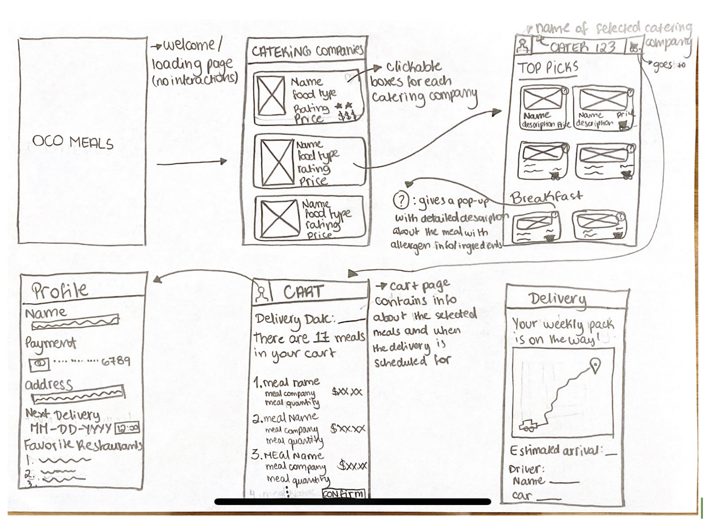
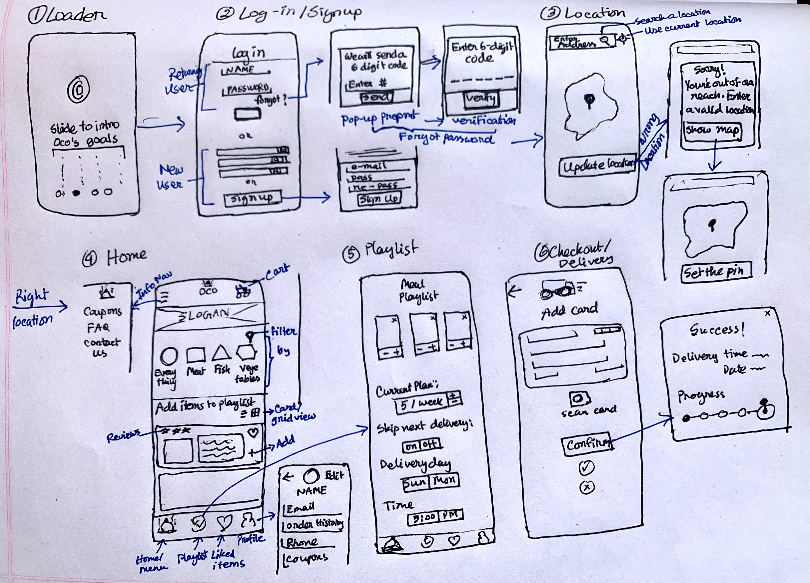
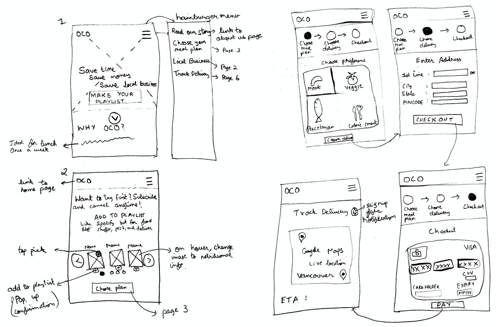
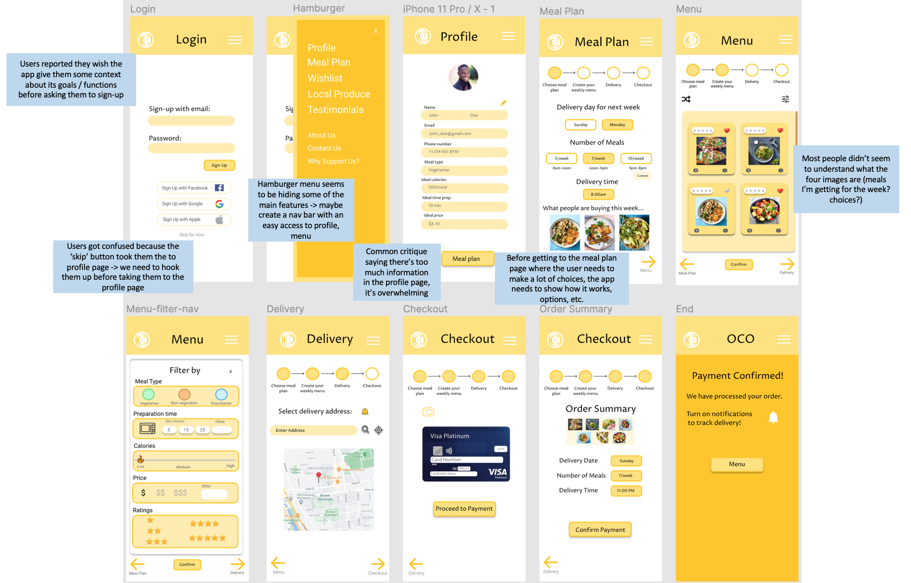

Sketching and Wireframing
Pre-design thinking
The typical users of the business are busy people who do not have time to cook but want to eat healthy food on a budget. This mobile app will help them save their time as they can order from anywhere in several steps and get notified about the delivery easily.
Sketching
We explored a wide variety of design alternatives in our sketches before wireframing.
- Infinite scrolling vs dividing into different pages
- Bottom navigation vs hamburger menu for easy navigation
- Hoverable vs clickable elements vs popup in menu gallery page
- Entering a form vs dragging pin vs using current location to select location
- Slider vs carousel for business goals after the loader page
- Scanning a credit card vs entering a form for checkout page
- +/- buttons vs toggle buttons vs option buttons for choosing number of meals
- Wheel picker vs expandable dropdowns for choosing time
- Sorting vs filtering in menu page
Sketch 1
Sketch 2
Sketch 3

Sketch 4
Combining Ideas into a Wireframe
After brainstorming the different sketches, my team and I decided on the following pages to include on the lo-fi prototype
- Loader page with Oco Meals Logo
- Login/Sign-up page for users with goals of the app
- Hamburger menu with profile, wishlist, local produce and abbout us among others
- Home page to select the meals per Week
- Menu page with meal items
- Filter page in menu items with filter options reflecting goals of Oco Meals (time, money)
- Delivery page with map
- Payment through credit card scan
Lofi Prototype
Mockups
After creating the Lo-Fi prototype, we designed an interactive mockup of how we wanted the real app to be. At this time, I was reading about color psychology and came across yellow being the appetizing color. That's when I realized why Mc Donald's has a yellow logo!
We made the first iteration of the prototype and participated in group peer feedback.
Hi-Fi Prototype (version 1) with critique feedback
Here are some design choices we made to the prototype after incorporating critique:
- Navigation bar: After realizing that the flow of the app was not as intuitive, we created a bottom navigation bar highlighting the main options instead of the hamburger menu to make it easier for users to go to a specific page with increased focus.
- Login: On the login page, we designed a slider with Oco meals' main goals to "hook the users". This was a way we found to transmit the goals of the start up to the customers once they open the app.
- Welcome: We added a welcome page which gives a brief overview of the app's functionalities and directs users accordingly.
- Favorites: The favorites section allows the user to save his/her/their favorite meals, so that they can easily access them for any week.
Here are some ways we incorporated the goals of Oco meals:
- On the login page, we display the goals explicitly: save time, save money, save local business, eat healthy, and cancel anytime.
- On the menu gallery page, for each food card from local business, we display the category calories as a measure of eating healthy; prep time to save time; price to save money.
- Users can also filter according to Oco meals' goals: time, money, and calories. Filtering would again save time for users.
- We allow fast delivery using "current location" and fast checkout by "scanning the card"
Usability Testing Analysis
After we made the above changes to our prototype, we also wanted to get feedback from real users so we gave the following task to three different users on Usertesting.com
Task: Order a set of meals for the following week as a user who has an account but hasn’t placed an order yet.
Why this task: Our two users would either be returning users or first time users. First time users would start from scratch and returning users would have the option to edit their previously saved meal plan. We tasked the users to start from scratch and edit their order thereby covering all functionality.
Instructions
- Assume you already have an account and sign in.
- Let’s explore what other meals Oco meals has to provide.
- Filter the items to be Vegetarian and their prep time to be 10 mins.
- Add an item in the ‘Favorites’.
- Let's start your order
- Choose number of meals as 5/week and confirm.
- 8AM on Sunday works great for you and the address is right so you go to the next page.
- Take a picture to scan the card and proceed to payment.
- You see that you don’t quite like the meal items for the week. Shuffle the items.
- You like the items you shuffled. Edit the delivery date to Monday.
- Also choose 11:00PM as your delivery time. Go to the next page.
- You’re back on the summary page and satisfied and want to pay with the card you’ve already saved. Press confirm.
- Go back home.
User Testing GIFs


Post Test Questions
We also included some post test questions for the users to answer after they finished testing the prototype
- Was there any step in the task that you found difficult or unintuitive to complete?
- All users found the task easy to complete and the app easy to navigate.
- What would you say are some of the goals this startup is trying to accomplish?
- Users recognized the goals of saving money, time and eating healthy. However, they did not identify the goals of saving local businesses and cancel anytime.
- Would you change anything about this app’s design or interaction? If yes, can you elaborate?
- Users would've appreciated more information about the food, especially in the menu and summary page.
- Did the task take more time than you had expected?
- Users found the tasks easy and fast.
User Performance
There were some features we were expecting to work and some not. The results more or less aligned with our anticipation.
Potential Changes to our prototype
After some insightful feedback from user testing, we came up with a few changes we would make to our app.
- Increase focus on food w.r.t to specific calories, ingredients, and bigger images on Menu page and Summary page.
- Highlight local businesses futher by providing a menu sort/filter option by any listed local business
- Add a save button in filter page to save your selections
Skills
Soft Skills
-
Teamwork
-
Collaboration
-
Decision Making
-
Leadership
Hard Skills
-
UX Research
-
User Testing
-
Wireframing
-
Lofi & Hifi Prototyping
Conclusion
It was an interesting experience to see how differently each of my team members perceived the startup's goals. Collaboration in the project made it more effective (and fun!) as we explored various design alternatives.
We contacted Oco Meals to show them our prototype and were super excited to hear back from them!